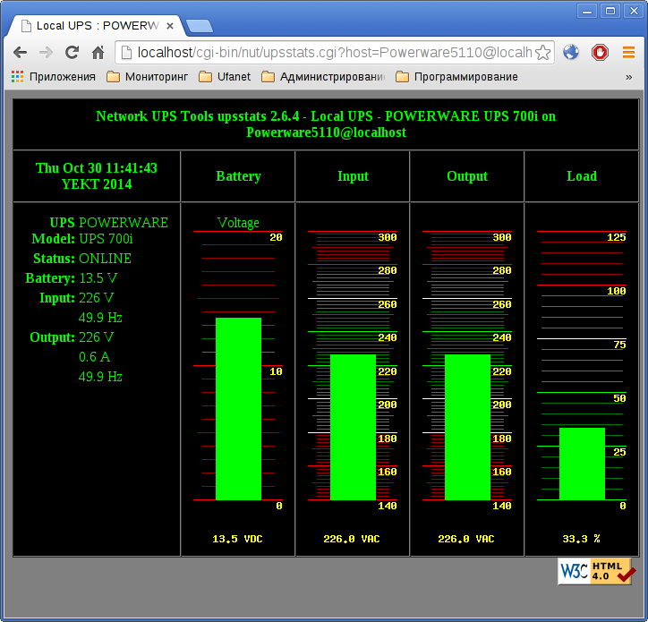

Эта заметка будет необычно длинной и нудной :) Дело в том, что поначалу система NUT показалась мне сложной, поэтому я начал читать man'ы, файлы конфигурации и выписывать понятое. Как оказалось, всё очень просто, но не пропадать же добру? Вот и решил выложить всё, что накопилось.
NUT - это сетевая клиент-серверная система для наблюдения за источниками бесперебойного питания. Сервер NUT устанавливается непосредственно на тот компьютер, к которому подключен информационный кабель ИБП. Клиенты устанавливаются на те компьютеры, которые запитаны от ИБП или на компьютеры, с которых нужно наблюдать за состоянием ИБП.
Установим на компьютер с ИБП серверную часть NUT:
# apt-get install nut-server
Настройки сервера NUT находятся в трёх файлах:
В файле /etc/nut/ups.conf описываются ИБП, подключенные к этому компьютеру. Файл представляет собой INI-файл, в котором секцией является имя ИБП, а внутри секции прописываются настройки драйвера ИБП. Для начала опишу глобальные настройки:
Локальные настройки, описывающие конкретный ИБП:
Драйвер может иметь собственные, специфичные только для него настройки и команды, о которых можно прочитать на странице руководства man выбранного драйвера. Например, у драйвера bcmxcp_usb, конфигурация которого будет приведена ниже, имеются следующие настройки и команды:
В файл /etc/nut/ups.conf пропишем настройки драйвера ИБП:
[Powerware5110] driver = bcmxcp_usb port = auto desc = "UPS on computer fstu"
Теперь настроим сервер, предоставляющий информацию о состоянии ИБП клиентам:
Поскольку в нашем случае единственный клиент располагается на компьютере с сервером, пропишем в файл /etc/nut/upsd.conf одну директиву:
LISTEN 127.0.0.1 3493
В файле /etc/nut/upsd.users описываются пользователи, которые будут работать с сервером. Файл имеет формат INI-файла, в котором именем секции является имя пользователя, а параметры внутри секции описывают права пользователя.
Теперь настроим доступ к серверу в файле /etc/nut/upsd.users. Добавим пользователя-администратора и пользователя, от имени которого будет подключаться клиент мониторинга, запущенный на том же компьютере, что и сервер:
[admin] password = password actions = SET instcmds = ALL [upsmon] password = password upsmon master
Если предполагается, что к серверу будут подключаться клиенты мониторинга, работающие на других компьютерах, можно добавить ещё одного пользователя с настройкой upsmon slave.
Осталось перезапустить сервер, чтобы его настройки вступили в силу:
# /etc/init.d/nut-server restart
На компьютеры, запитанные от ИБП нужно поставить пакет с консольными клиентами NUT:
# apt-get install nut-client
Внутри пакета есть три консольных клиента, умеющих взаимодействовать с сервером NUT:
В составе клиента имеется также утилита upssched с файлом конфигурации /etc/nut/upssched.conf, которая помогает осуществлять отложенное исполнение команд. В файле конфигурации можно настроить таймер, который будет запущен при наступлении одних событий (например, когда в ИБП не поступает внешнее питание, а его батарея разрядилась) или сброшен при наступлении других событий (например, когда на ИБП вновь начало поступать внешнее питание). Когда таймер срабатывает, выполняется указанная команда.
В файле /etc/nut/nut.conf имеется единственный параметр MODE, задающий режим работы клиента upsmon. Имеется четыре режима работы системы NUT:
В нашем случае подходит значение standalone, которое и пропишем в файл /etc/nut/nut.conf:
MODE=standalone
Текущее состояние ИБП можно посмотреть при помощи следующей команды:
$ upsc Powerware5110@localhost
Текущее значение любого из параметров можно посмотреть при помощи команды с указанием имени параметра. Например, текущий статус можно посмотреть при помощи такой команды:
$ upsc Powerware5110@localhost ups.status
Возможные значения статуса:
Для выполнения команд на ИБП необходимо предоставить имя пользователя и его пароль. Например, вот так можно заставить ИБП отключить потребителей, а при появлении питания на входе снова включить их:
$ upscmd -u admin -p password Powerware5110@localhost shutdown.return
Если команда принимает дополнительные параметры (например, время в секундах), то их значения можно указать после команды ИБП, в качестве дополнительного аргумента.
Настроим клиента мониторинга, который наблюдает за состоянием ИБП и при необходимости выключает компьютер. Для этого впишем в файл /etc/nut/upsmon.conf следующую конфигурацию:
# Описание ИБП, за которым нужно наблюдать MONITOR Powerware5110@localhost 1 upsmon password master # Команда, которую нужно выполнить перед пропаданием питания от ИБП SHUTDOWNCMD "/sbin/shutdown -h +0"
В настройке MONITOR цифра 1 означает количество блоков питания компьютера, запитанных от этого ИБП. Большинство компьютеров имеет только один блок питания. Можно указать значение 0, если компьютер не запитан от ИБП, но необходимо следить за состоянием ИБП.
Кроме указанных настроек доступны также следующие:
# Пользователь, от имени которого будет работать клиент мониторинга # RUN_AS_USER nutmon # Минимальное количество запитанных блоков питания компьютера, необходимых для его работы # Например, если компьютер обладает 4 блоками питания, но для работы достаточно 2, то # здесь нужно вписать 2. Количество блоков питания, запитанных от определённого ИБП # указывается в настройке MONITOR MINSUPPLIES 1 # Обычная частота опроса состояния ИБП POLLFREQ 5 # Частота опроса состояния ИБП, если он работает от батареи POLLFREQALERT 5 # Интервал, в течение которого команда на отключение должна быть подтверждена # Указывается на случай, если в течение этого времени вновь появится питание # и отключение будет отменено HOSTSYNC 15 # Если в течение этого интервала данные от ИБП не обновлялись, ИБП помечается # как недоступный и заряд его батареи будет считаться низким, что может # спровоцировать отключение компьютеров, запитанных от него DEADTIME 15
Перезапустим клиента мониторинга:
# /etc/init.d/nut-client restart
Протестировать выключение системы в случае пропадания питания и разряда батареи, можно при помощи команды:
# upsmon -c fsd
Графический клиент находится в пакете nut-monitor. Установим его:
# apt-get install nut-monitor
Чтобы подключиться к ИБП, нужно указать IP-адрес или имя сервера, порт и, если нужно, имя пользователя и пароль:
После подключения можно посмотреть краткую сводку по текущему состоянию ИБП:
На отдельной вкладке можно посмотреть значение всех переменных ИБП:

Можно добавлять ИБП в закладки и переключаться между ними:
Клиента можно свернуть в трей, он примет вид батарейки:

Веб-клиент находится в пакете nut-cgi. Установим сам клиент, а также nginx и uwsgi для запуска CGI-приложений:
# apt-get install nut-cgi nginx uwsgi
Настройки веб-клиента располагаются в файлах /etc/nut/upsset.conf и /etc/nut/hosts.conf.
В первом файле нет никаких настроек. Его единственное назначение - отключить веб-интерфейс до тех пор, пока вы не ограничите в веб-сервере список узлов, с которых будет доступен этот веб-интерфейс. Когда доступ ограничен, можно раскомментировать единственную опцию из этого файла:
I_HAVE_SECURED_MY_CGI_DIRECTORY
Во втором файле находится список ИБП, состояние которых можно будет просматривать через этот веб-интерфейс. Директивы имеют следующий вид:
MONITOR myups@localhost "Local UPS"
В нашем случае в этом файле будет лишь одна директива:
MONITOR Powerware5110@localhost "Powerware5110 on my computer"
Для запуска веб-клиента NUT будем использовать uwsgi и nginx. Настроим пул процессов, обслуживающих CGI-приложение NUT в файле /etc/uwsgi/apps-available/cgi.ini:
[uwsgi] procname = uwsgi-cgi procname-master = uwsgi-cgi-master plugins = cgi cgi = /usr/lib/ cgi-allowed-ext = .cgi cgi-timeout = 300 processes = 2
Включим использование этого приложения:
# cd /etc/uwsgi/apps-enabled/ # ln -s /etc/uwsgi/apps-available .
Запустим включенное приложение uwsgi:
# /etc/init.d/uwsgi start cgi
Теперь настроим обработку доступа к CGI-страницам в файле /etc/nginx/sites-available/default:
server {
listen 127.0.0.1:80;
server_name localhost;
root /usr/share/nut/www;
index index.html;
location ~ ^/cgi-bin/nut/(upsimage|upsset|upsstats)\.cgi$ {
allow 127.0.0.1;
deny all;
include uwsgi_params;
uwsgi_modifier1 9;
uwsgi_pass unix:/var/run/uwsgi/app/cgi/socket;
uwsgi_param SCRIPT_FILENAME /usr/lib/cgi-bin/nut/$1.cgi;
}
}
Включим использование этого сайта:
# cd /etc/nginx/sites-enabled/ # ln -s /etc/nginx/sites-available .
Запустим включенное приложение uwsgi:
# /etc/init.d/nginx reload
Директивы allow и deny в файле конфигурации nginx ограничивают доступ к веб-клиенту NUT только IP-адресом самого компьютера. Если в директиве listen указан IP-адрес 127.0.0.1, то директивы deny и allow указывать не обязательно, т.к. к веб-серверу просто неоткуда больше подключиться, кроме как с самого компьютера. Если же веб-сервер прослушивает какие-то внешние IP-адреса, то в директивах allow нужно перечислить те IP-адреса или подсети, с которых необходим доступ к веб-интерфейсу.
На странице http://localhost/cgi-bin/nut/upsstats.cgi можно увидеть таблицу с ИБП с кратким описанием текущего состояния каждого из них. В моём случае ИБП всего один:
Если в таблице ИБП перейти по ссылке в левом столбце, то можно попасть на такую вот страницу с диаграммами текущего состояния ИБП:
Если в таблице ИБП перейти по ссылке в правом столбце, то можно попасть на страницу с текущими значениями переменных ИБП: